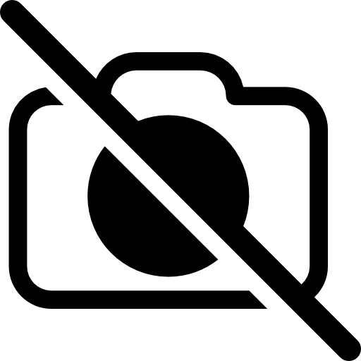

Wzorce projektowe
W skrócie . . .
Wzorce projektowe to sprawdzone, powtarzalne i ustandaryzowane rozwiązania problemów, które mogą pojawić się podczas projektowania oprogramowania. Są to pewnego rodzaju szablony, które programiści stosują, aby rozwiązywać konkretne problemy projektowe w sposób efektywny i zgodny z najlepszymi praktykami.
Wzorce projektowe są uważane za dobre praktyki projektowania oprogramowania, ponieważ opierają się na doświadczeniach wielu programistów i zostały przetestowane w praktyce. Pozwala to na osiąganie lepszej jakości kodu, zwiększenie czytelności i łatwości utrzymania kodu, a także na zmniejszenie ryzyka popełnienia błędów.
Gang czworga . . .
Gang Czworga (ang. Gang of Four, w skrócie GoF) to grupa autorów książki "Design Patterns: Elements of Reusable Object-Oriented Software" (pol. "Wzorce projektowe: Elementy oprogramowania obiektowego wielokrotnego użytku"). Książka ta została opublikowana w 1994 roku i jest uważana za jedną z najważniejszych publikacji na temat wzorców projektowych w programowaniu obiektowym.
Grupa GoF składała się z czterech autorów: Ericha Gamma, Richarda Helma, Ralpha Johnsona i Johna Vlissidesa. Byli oni ekspertami w dziedzinie programowania obiektowego i mieli duże doświadczenie w tworzeniu oprogramowania. W swojej książce przedstawili 23 wzorce projektowe, które mogą być stosowane w projektowaniu oprogramowania obiektowego.
Wzorce projektowe GoF stały się bardzo popularne w świecie programowania i są często wykorzystywane przez programistów w różnych językach programowania. Książka "Design Patterns" uważana jest za klasykę w dziedzinie wzorców projektowych i jest nadal powszechnie czytana i cytowana w literaturze programistycznej.
Erich Gamma
